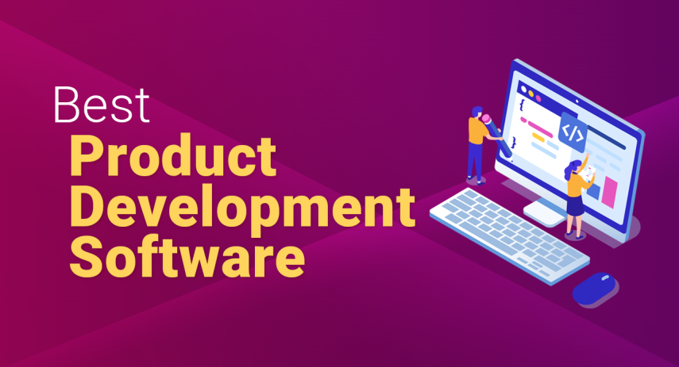

Best Product Development Software
James McGill | Updated on August 8th 2024Privacy and Technology Consultant In a hurry? Here’s the top Product Development Software for 2025:
Why Do So Many New Products Fail?
Harvard Business School reports that around 30,000 new consumer products are launched annually, yet roughly 80% fail to meet their goals.
Why does this happen?
Several factors contribute to this high failure rate: poor timing, targeting the wrong market, initial success but failing to respond to consumer feedback, or not achieving a good product-market fit. While the successful 20% typically benefit from robust support teams—managers, marketers, designers, and developers—there is one critical aspect within your control that can significantly influence outcomes.
The Problem: Inefficiency in Product Development
Imagine a mid-sized tech company developing a new smart home device. The initial excitement around the project quickly diminishes as the team struggles with several issues:
- Poor Communication and Collaboration: With team members spread across different locations and departments, maintaining seamless communication becomes a nightmare. Important updates get lost in long email chains, and collaboration suffers.
- Disorganized Workflow: Without a structured process in place, the development phases—design, prototyping, testing, and production—overlap and conflict. The lack of a clear roadmap leads to duplicated efforts and missed deadlines.
- Risk Management: Identifying potential risks early on is challenging. When unforeseen problems arise, they cause significant delays and escalate costs.
- Quality Control: Ensuring consistent quality across all development stages is difficult. Flaws often go unnoticed until the later stages, requiring costly rework and delaying the launch.
- Time-to-Market: In a fast-paced industry, the delay in bringing a product to market can result in missed opportunities and lost revenue.
An overview of the best Product Development Software for 2025:
- 🥇 1. Hubspot — HubSpot's AI-powered platform seamlessly integrates marketing, sales, and customer service tools, facilitating efficient product development from concept to launch. Its automation features, extensive app integrations, and real-time analytics enhance team collaboration and streamline workflows.
- 🥈 2. Clickup — ClickUp provides real-time reporting and multiple views, such as Kanban and Gantt charts, to streamline project management from ideation to release.
- 🥉 3. monday — Monday Dev streamlines product development with customizable workflows, automation, and integrations with tools like GitHub and Slack. It enhances team collaboration and efficiency through real-time reporting and multiple visualization options.
- Frequently Asked Questions about Product Development Software (FAQ).
The Solution: Product Development Software
Product development software offers a comprehensive solution to these challenges. Here’s how it can transform your product development process:
- Enhanced Communication and Collaboration: Product development software provides a centralized platform where all team members can collaborate in real time. Features like instant messaging, video conferencing, and shared workspaces ensure everyone stays on the same page. For a tech company, this means design teams in one country can seamlessly collaborate with production teams in another, reducing misunderstandings and fostering innovation.
- Streamlined Workflow Management: With product development software, you can create and manage a detailed project roadmap. Tools for task assignment, progress tracking, and milestone management ensure that every phase of development is well-organized. This structure eliminates overlapping tasks and ensures that deadlines are met.
- Proactive Risk Management: Advanced product development software comes equipped with risk management tools. These tools help identify potential risks early in the development process, allowing the team to address them proactively.
- Rigorous Quality Control: Quality control features in product development software ensure that every stage of the product lifecycle adheres to high standards. Automated testing, version control, and feedback loops help catch and fix issues early.
- Accelerated Time-to-Market: By optimizing every aspect of the development process, product development software significantly reduces time-to-market. A company can bring their new products to market faster, staying ahead of competitors and capitalizing on market opportunities.
Inefficiency in product development can be a major roadblock to success. However, with the right product development software, these challenges can be effectively managed. Enhanced communication, streamlined workflows, proactive risk management, rigorous quality control, and accelerated time-to-market are just a few of the benefits that can transform your development process.
1. Hubspot — All-Inclusive Product Development Tool

HubSpot is a comprehensive platform designed to streamline product development through its AI-powered tools that integrate marketing, sales, and customer service functions. The platform’s unified approach allows product development teams to collaborate effectively by providing a single source of truth for all customer interactions and project updates. The Marketing Hub offers robust lead generation, marketing automation, and analytics capabilities, which help teams attract and nurture prospects throughout the product development cycle.
The Sales Hub enhances the product development process by leveraging AI to build and manage sales pipelines, automate repetitive tasks, and facilitate deal closures. This ensures that product teams can focus on refining the product while the sales pipeline remains optimized. Additionally, the Service Hub’s omni-channel help desk and AI chatbots provide exceptional customer support, driving customer retention and satisfaction, which is critical for iterative product improvement based on real-time feedback.
Furthermore, HubSpot’s extensive integration capabilities with over 1,500 apps allow seamless connectivity with essential tools like GitHub, Slack, and Google Drive. This ensures that product development teams have all the resources they need at their fingertips, enhancing productivity and reducing the time to market. The platform's customizable dashboards and automated workflows further empower teams to track progress, identify bottlenecks, and make data-driven decisions, thereby optimizing the entire product development lifecycle.
HubSpot provides a holistic approach to product development, making it an excellent choice for businesses looking to improve their development processes and bring innovative products to market more effectively.
Get Hubspot - The Leading Product Development Software!
2. Clickup — Ideal for Expanding Teams

ClickUp offers a comprehensive solution for product development teams, streamlining the entire development lifecycle within a single platform. Its agile workflows are particularly beneficial, allowing teams to adapt processes using Kanban or Scrum methodologies, ensuring flexibility and efficiency. The ability to create custom workflows, automate repetitive tasks, and visualize progress with clear roadmaps helps keep everyone aligned and focused on shared goals.
The platform excels in backlog management, providing tools to capture, track, and prioritize bug and issue requests efficiently. Product developers can link related issues, add tags, and customize fields and statuses to fit their specific needs. This organized approach to handling backlogs and integrating feedback ensures that no critical issues are overlooked, enhancing the overall quality of the product.
Moreover, ClickUp's integration capabilities stand out, connecting seamlessly with over 200 tools such as GitHub, Slack, and Figma. This integration allows for a cohesive workflow across various stages of development, from planning to release. The real-time reporting and customizable dashboards provide valuable insights, enabling data-driven decisions and improved collaboration among product development teams. ClickUp not only simplifies project management but also fosters a more connected and efficient development environment.
ClickUp's collaborative features make it an excellent choice for product development teams. It supports seamless communication and collaboration across different locations and departments, which is crucial for maintaining cohesion and efficiency. The software also integrates with other tools commonly used in product development, providing a centralized platform for all project-related activities. Overall, ClickUp's comprehensive suite of templates and agile management tools make it an invaluable asset for product development teams aiming to optimize their workflow and deliver high-quality products.
Get Clickup - The Leading Product Development Software!
3. monday — Best For Agile teams
Monday Dev stands out as a robust product development software designed to streamline the entire development process from concept to launch. Its customizable workflows allow teams to tailor their processes to fit their unique strategies, which is particularly beneficial for agile teams. Whether you are managing sprints, creating custom roadmaps, or using Gantt charts, Monday Dev provides the tools needed to ensure projects stay on track and meet deadlines. The platform's flexibility in adapting to different project requirements makes it a versatile choice for product development teams looking to optimize their workflows.
One of the key features of Monday Dev is its automation capabilities. By automating repetitive tasks such as task assignments, notifications, and workflow integrations, teams can significantly reduce the operational workload and focus more on strategic tasks. This not only speeds up the development process but also ensures a higher level of consistency and accuracy in task management. Additionally, the platform supports integrations with popular tools like GitHub, Slack, and GitLab, enabling seamless updates and real-time collaboration across different departments.
Monday Dev also excels in providing multiple visualization options, including Kanban boards, custom dashboards, and burndown charts. These visualization tools offer full transparency into the team's progress and potential bottlenecks, facilitating more informed decision-making and effective stakeholder communication. The ability to integrate with over 200 apps further enhances its utility, allowing teams to manage all aspects of product development within a single, cohesive platform. By leveraging these features, product development teams can drive better outcomes, accelerate time to market, and ensure continuous improvement throughout the product lifecycle.
The platform's user-friendly interface and robust integration capabilities make it suitable for teams of all sizes, particularly those looking to streamline their development processes and enhance collaboration. Overall, Monday Dev is best suited for dynamic development teams seeking an all-in-one solution to manage their projects from conception to release.
Get monday - The Leading Product Development Software!
How We Chose the Best Product Development Software
To determine the best product development software, we evaluated several key factors:
- Business Needs and Goals: We prioritized software that aligns with specific business objectives. For example, Monday dev excels in Agile project management, supporting iterative development goals.
- Scalability and Flexibility: We ensured the software could adapt and grow with the business, accommodating evolving needs.
- Integration Capabilities: We checked the compatibility of the software with existing tools and systems, ensuring seamless integration.
- User Interface: We assessed the ease of use and intuitiveness of the design.
- Cost: We consider whether the app provides good value for its cost. This includes the availability of free content, the cost of subscriptions, and what each pricing tier offers. Additionally, apps should be accessible on multiple devices and platforms, ensuring that users can learn whenever and wherever they choose.
- Feedback and Support: We compared the costs to determine value for money.
Product Development Software - Frequently Asked Questions (FAQ)
💽 What is product development software?
Product development software is a comprehensive suite of digital tools designed to assist teams throughout the entire lifecycle of bringing a product from concept to market. It encompasses features for project management, collaboration, design, prototyping, version control, and analytics. These tools streamline workflows, enhance team communication, and improve efficiency by integrating with other essential platforms like GitHub, Slack, and Jira. This software is crucial for modern product teams aiming to innovate, speed up development cycles, and deliver high-quality products that meet market demands.
💰 How much does product development software typically cost?
The cost of product development software varies widely depending on the features, scalability, and the size of the team using it. Basic versions of some tools are available for free or for a low monthly fee, often ranging from $10 to $50 per user per month. More advanced versions with extensive features, integrations, and support can range from $100 to several hundred dollars per user per month. For large enterprises requiring custom solutions and extensive support, costs can run into thousands of dollars per month. It's essential to compare the price against the value and benefits the software provides, such as improved efficiency, better project management, and enhanced collaboration. Popular options like Monday.com and ClickUp offer various pricing tiers to cater to different business needs and budgets.
📊 What methodologies are commonly supported by product development software?
Product development software typically supports a range of methodologies to cater to different project management styles and needs. Commonly supported methodologies include Agile, which emphasizes iterative development, collaboration, and flexibility; Scrum, a subset of Agile that focuses on fixed-length iterations called sprints; and Lean, which aims to maximize value by minimizing waste and optimizing efficiency. Additionally, many tools support Kanban, which uses visual boards to manage workflows and improve task tracking, and Waterfall, a more traditional linear approach where each phase must be completed before the next begins. These methodologies help teams manage their projects more effectively, ensuring that they can adapt to changing requirements, improve communication, and deliver high-quality products on time.
💻 What should I look for in the user interface of product development software?
When evaluating the user interface (UI) of product development software, it’s crucial to ensure that it is intuitive and easy to navigate, minimizing the learning curve for new users. A well-designed UI should facilitate quick access to essential features and tools, helping users stay focused and productive. Look for customization options that allow users to tailor their workspace to their specific needs, such as customizable dashboards and flexible layout arrangements. Visual clarity is also important; the interface should present information in a clear and organized manner, with effective use of colors, icons, and spacing to reduce cognitive load. Integration with other tools and seamless workflow management are essential to ensure that users can efficiently manage tasks, track progress, and collaborate with team members. Additionally, responsive design that works well across various devices, including mobile, can enhance accessibility and convenience.
Transparency and Trust: The aim of this website is to help you find the perfect software for your needs in an easy-to-view comparison list. You can read more about how we review and about our background in the About Us section of this website. Software.fish does not feature all of the software available in the market, we cherry-pick what we consider to be the leaders in each vertical. We try to keep this site updated and fresh, but cannot guarantee the accuracy of the information as well as the prices featured at all times. All prices quoted on this site are based on USD so there could be slight discrepancies due to currency fluctuations. Although the site is free to use, we do earn commissions from the software companies that we have partnered with. If you click on one of our links and then make a purchase, we will get paid by that company. This has an impact on the ranking, score, and order in which the software is presented in our list and elsewhere throughout the site. Software listings on this page DO NOT imply endorsement.